Cor, tipografia, forma, movimento, componentes e escrita que nasceram no site e agora são o padrão da marca. Para quem desenha, desenvolve, escreve ou pede à IA para criar em nome da A-Players.
O site da A-Players definiu como a marca se parece, se move e fala. Este sistema transforma essas decisões em tokens, componentes e regras para apresentações, materiais, produtos e campanhas. Quando o site evoluir, ele evolui junto.
Quatro cores, uma noite.
As cores do logo dividem o espectro em quartos iguais. A noite azul é o palco: elas brilham sobre ela e marcam o que importa sobre a folha clara.
A forma é assimétrica.
Cantos maiores no alto à esquerda e embaixo à direita, menores nos outros dois. Do cartão ao selo, a mesma assinatura em sete tamanhos.
01Selo, chip, botão
O destaque é uma placa.
O cartão carrega uma placa do seu tom, deslocada. Ela cresce quando a pessoa interage. Nenhuma barra lateral colorida.
Feito a partir do site A-Players. Cada decisão aqui tem origem numa peça que já está no ar. Estratégia que gera resultado. Resultado que sustenta o crescimento.
Fundamentos
A base de tudo.
Os valores que dão à A-Players a sua cara. Cada um vira um token com nome, valor e uso, nos temas claro e escuro.
Fundamentos
Cor
Quatro cores do logo, uma noite azul e uma folha clara. O violeta apoia. Clique numa cor para copiar o valor.
O espectro da marca
A ordem é sempre azul, verde, vermelho e amarelo: é a ordem dos quartos do divisor espectral, dos triângulos da pill e das colunas da cortina.
Apoio
Superfícies
Noite elevada--ap-night-2 · #111d32
Noite mais alta--ap-night-3 · #16253f
Noite--ap-night · #0d1728. O fundo da marca, escuro nos dois temas, com um ponto a cada 56px.
Cartão--ap-card
Cartão secundário--ap-card-2
Folha--ap-sheet. A superfície de leitura que sobe sobre a noite. No tema escuro vira azul noite.
Tinta
Tons das plataformas de IA e papéis do Context Graph
Uso
Tom
Token
Onde aparece
Atlassian
Azul
--ap-front-atlassian
Placa, selo e nota da plataforma; Teamwork Collection
CISP1
Violeta
--ap-front-cisp1
Placa e núcleo da CISP1
monday.com
Vermelho
--ap-front-monday
Placa e nota da monday.com
Pessoas
Azul
--ap-role-pessoas
Camada Negócio do gráfico
Processo
Verde
--ap-role-processo
Camada Processos
Conexão
Vermelho
--ap-role-conexao
Camada Plataformas
Sinal
Amarelo
--ap-role-sinal
Camada Agentes
Feedback
Violeta
--ap-role-feedback
Camada Feedback
Contraste, calculado agora
Os valores abaixo são medidos na sua tela a partir dos tokens, no tema que está ligado. Troque o tema no cabeçalho para ver o outro.
Par
Exemplo
Contraste
Uso
Tinta sobre folha
Texto corrido
Tinta de apoio sobre folha
Texto de apoio
Tinta de apoio sobre cartão
Texto de cartão
Branco sobre a noite
Título
Apoio sobre a noite
Texto de abertura
Noite sobre amarelo
Selo 04
Noite sobre azul
Selo 01
Branco sobre azul
Botão principal
O branco sobre o azul do logo fica perto de 4,2:1. Ele continua no botão principal (16px, peso 600) por ser a cor da marca; não use essa combinação em texto corrido nem abaixo de 16px.
Faça
Use as quatro cores na ordem do espectro quando aparecerem juntas.
Dê a cada item um tom e use o mesmo tom na placa, no selo e na nota.
Use o amarelo como sinal: foco, placa do botão, destaque pontual.
Evite
Degradês livres entre as cores: o espectro tem quartos de paradas duras ou o fluido oficial.
Amarelo em texto ou linha fina sobre fundo claro (use --ap-yellow-line).
Preto puro ou cinza neutro no lugar da noite.
Fundamentos
Tipografia
Manrope nos títulos, DM Sans no texto e na interface. Decisão de 21/09/2026; Manrope em tudo foi testada e recusada.
Aa
Manrope
Títulos, display, números grandes e assinaturas. Pesos de 500 a 800; H1 e H2 em 800, H3 em 700, títulos claros sobre a noite em 720.
500600700720780800
Aa
DM Sans
Texto corrido, rótulos, botões, campos e navegação. Pesos 400, 500, 600 e 700, com tamanho óptico.
400500600700
Escala
Display--ap-t-display
AI-People
54 a 120px · Manrope 780 entrelinha .9 · -0,05em
H1--ap-t-h1
Trabalho conectado.
44 a 88px (44 a 66px no notebook) · Manrope 800 entrelinha 1 · -0,038em
H2--ap-t-h2
Três plataformas.
36 a 70px (36 a 55px no notebook) · Manrope 800 entrelinha 1,02 · -0,035em
Intermediário--ap-t-mid
Cinco Collections, um só gráfico
28 a 44px · Manrope 800 entrelinha 1,06 · -0,03em
H3--ap-t-h3
Teamwork Graph
24px · Manrope 700 entrelinha 1,2 · -0,015em
H4--ap-t-h4
Indicamos quando
17px · Manrope 700 entrelinha 1,3
Apoio--ap-t-lead
Organizamos conhecimento, processos e aplicações para que a IA encontre a informação certa e execute tarefas dentro do processo.
18px · DM Sans 400 entrelinha 1,6
Texto--ap-t-body
Entendemos o contexto do negócio para conectar a capacidade do time, os processos e as plataformas.
16px · DM Sans 400 entrelinha 1,6 · 17 e 18px em telas grandes
Rótulo--ap-t-label
Contexto corporativo
14px · DM Sans 700 caixa normal, nunca caixa alta
Número--ap-t-num
010203
12px · DM Sans 700 algarismos tabulares
Faça
Quebre títulos de abertura em linhas de sentido (.ap-ln2) e deixe o navegador equilibrar o resto.
Use o hífen espectral em A-Players e AI-People quando o nome for o título.
Rótulo curto em caixa normal, acima do título.
Evite
Rótulos em caixa alta espaçada (recusado em 25/09/2026).
Uma palavra do título em outra cor ou em itálico.
Manrope em texto corrido ou DM Sans em títulos grandes.
Fundamentos
Forma
A assinatura da A-Players: cantos grandes no alto à esquerda e embaixo à direita, pequenos nos outros dois. Sete tamanhos, do mais largo ao menor.
Uma regra, todos os tamanhos
Os quatro valores seguem a ordem do CSS: alto à esquerda, alto à direita, embaixo à direita, embaixo à esquerda. O primeiro e o terceiro são grandes; o segundo e o quarto, cerca de um terço deles. O círculo, a forma reta e o raio igual nos quatro cantos ficam de fora, com uma exceção: o ponto de trilho, que é redondo.
Os sete raios
Folha--ap-r-sheet · 48 14 48 14A superfície que sobe sobre a noite.
Marca de tom--ap-r-mark · 3 1 3 1Quadrado de 9px antes do rótulo.
Fundamentos
Espaço e grade
O módulo é de 56px: a noite tem um ponto a cada 56px e o gráfico vivo usa a mesma retícula. O conteúdo mora numa largura de 1320px com margens fluidas.
56pxum módulo da retícula
Medidas da página
Medida
Token
Valor
Uso
Largura do conteúdo
--ap-wrap-w
1320px; 1480px acima de 1800px; 1680px acima de 2300px
Tudo o que se lê
Margem lateral
--ap-gutter
20 a 56px (4vw)
Lados do conteúdo
Entre seções
--ap-gap-sec
104 a 168px
Seções dentro de uma folha
Recuo da folha
--ap-sheet-inset
6 a 16px
Distância da folha à borda da tela
Respiro de abertura
composição
128 a 176px no topo
Espaço do cabeçalho flutuante
Cabeça de seção em 12 colunas
Título nas colunas 1 a 7Apoio a partir da coluna 9, em 4 colunas
A coluna 8 fica vazia de propósito: é o respiro entre o título e o apoio. Abaixo de 1000px, os dois empilham.
Fundamentos
Placa e elevação
A A-Players não usa sombra cinza para destacar: usa uma placa sólida do tom do item, deslocada para baixo e à direita. Profundidade de verdade fica para o que flutua.
4px--ap-plate-smBotão no hover; placa pequena em repouso
6px--ap-plate-mdAba ativa, porta, logo de parceiro; placa pequena na interação
Use o arquivo oficial e posicione na periferia (canto, borda da folha, atrás de um cartão).
Uma ou duas formas por composição.
Evite
Desenhar a forma em CSS ou num editor.
Aplicar opacidade por cima do SVG.
Geometria atravessando texto ou cartão.
Fundamentos
Ícones
Ícones de interface em traço de 1,8 com pontas redondas, num quadro de 24px. Ícones de produto são sempre os oficiais de cada fabricante.
Interface
Início
Serviços
Intelligence
Pessoas
Blog
Conversa
Menu
Fechar
Copiar
Link externo
Abrir submenu
Triângulos da pill
Produtos dos parceiros
Jira
Confluence
Loom
Jira Service Management
CSM
Assets
Bitbucket
DX
Pipelines
Rovo Dev
Jira Product Discovery
Feedback
Focus
Talent
Rovo
monday work management
monday CRM
monday service
monday dev
Sidekick
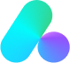
Agents
Vibe
Os ícones de IA da monday.com não são quadrados: mantenha a proporção original. Nome de produto como o fabricante escreve (Jira Service Management, monday CRM, Rovo Dev); em espaço curto, Customer Service Management vira CSM, com o nome completo no title. Todas as versões oficiais estão na Biblioteca.
Fundamentos
Logos
O símbolo colorido com o nome em cinza sobre o claro e em branco sobre o escuro. Escolha a versão pelo contraste do fundo, não pelo nome do arquivo.
Horizontal, fundo escuroaplayers-horizontal-escuro.svg · no site: 132px no cabeçalho
Uma cor, brancoSobre foto ou cor da marcaUma cor, pretoImpressão em uma cor
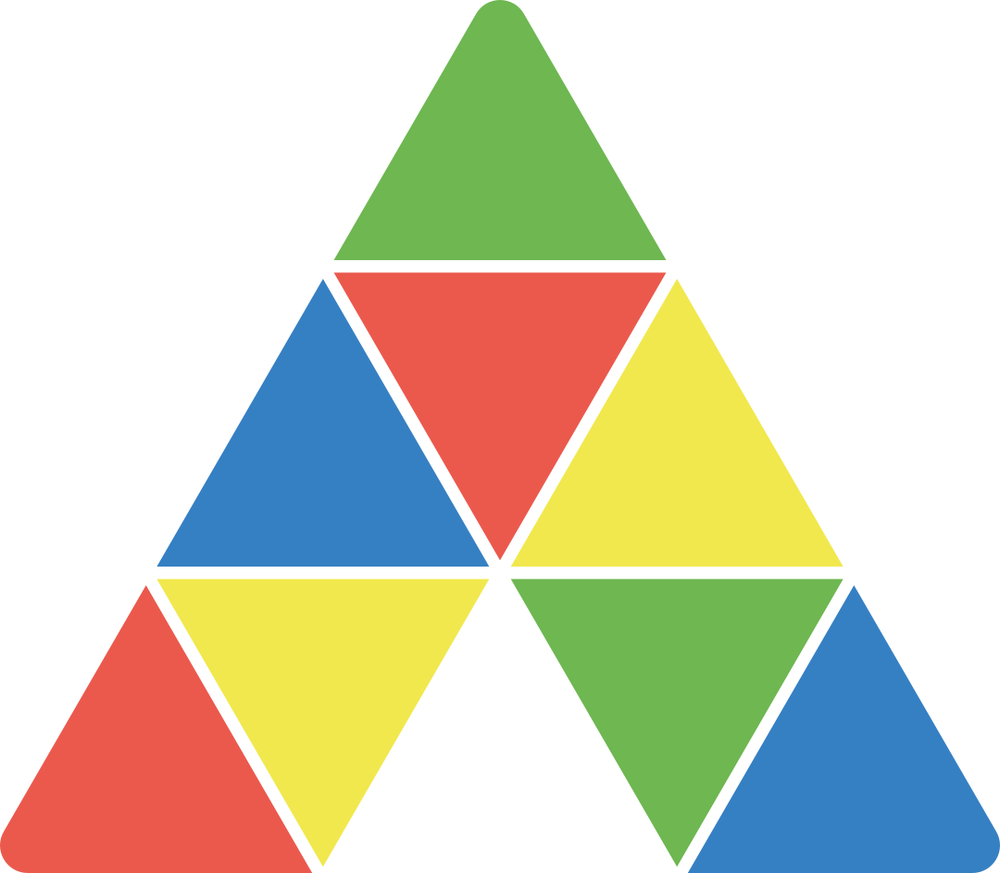
SímboloAvatar, ícone de app, selo
VerticalEspaços estreitos e altos
As três plataformas de IA, com o mesmo peso
Atlassian é larga e em caixa alta; a CISP1 é estreita, de traço fino e símbolo redondo. Para que nenhuma pareça maior, a altura de cada logo compensa a densidade: 23px, 46px e 28px numa placa de 68 × 280px. Ordem sempre alfabética: Atlassian, CISP1, monday.com.
Atlassian · 23px · fator .82
CISP1 · 46px · fator 1,64
monday.com · 28px · fator 1
Collections da Atlassian
O logo oficial de cada Collection substitui o nome em texto. Os cinco arquivos dividem o mesmo quadro (466 × 164), com a palavra Collection na mesma altura e na mesma linha de base: lado a lado, nenhum parece maior. O tema escolhe a versão; no escuro, o nome fica branco e o bloco colorido não muda.
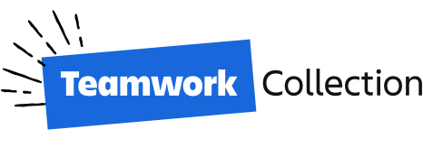
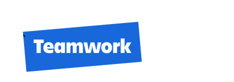
Negócio, projetos e conhecimento
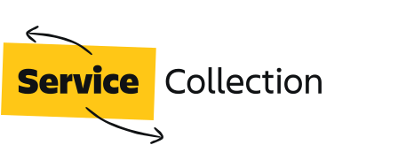
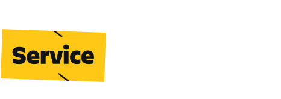
Atendimento, TI e operações
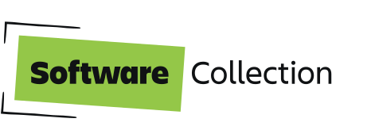
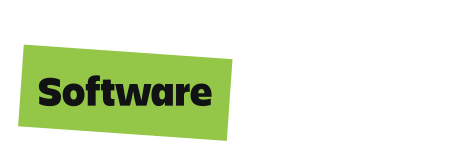
Engenharia
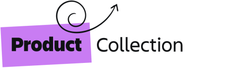
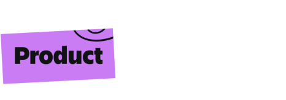
Produto
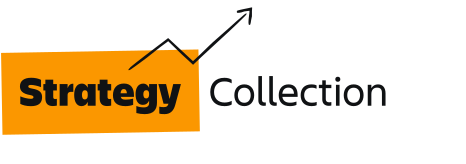
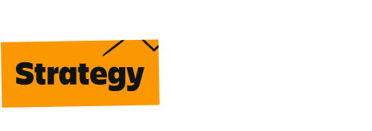
Liderança e portfólio
Logos das Collections.ap-coll-logo · .ap-on-light · .ap-on-darkTroque o tema no cabeçalho para ver a versão do escuro.
Faça
Use os arquivos oficiais de assets/marca e assets/parceiros; os outros formatos estão na Biblioteca.
Sobre o escuro, as versões para fundo escuro de cada parceiro, em par com a do claro (.ap-on-light e .ap-on-dark).
As três plataformas de IA na ordem Atlassian, CISP1, monday.com.
As cinco Collections pelo logo, sempre no mesmo quadro.
Evite
Redesenhar, recolorir ou esticar qualquer logo.
Logo de parceiro ao lado de outro sem a mesma altura óptica.
Colocar a Atlassian ao lado da monday.com fora da ordem.
Repetir em texto o nome da Collection ao lado do logo dela.
Fundamentos
Imagem
Gente de verdade, em fotos com o canto da marca, e os stickers da A-Players para dar humor. Quando não há foto, a capa é a cor do tom com o título.
Gente realEquipe e eventos da A-Players; nada de banco de imagem genérico.
Sticker fora do rostoNa borda da foto, girado de 7 a 12 graus, com sombra suave.
Capa de leitura.ap-post__type
Fundamentos
Tema escuro
A noite já é escura nos dois temas. No tema escuro, a folha e os cartões viram camadas de azul noite: quanto mais alto, mais claro. As cores da marca não mudam.
Token
Claro
Escuro
--ap-sheet
#f2f6fb
#111d32
--ap-card
#ffffff
#172741
--ap-card-2
#f7f9fc
#1d2f4d
--ap-ink
#17233a
#eaf0f8
--ap-ink-2
#4f5d73
#a9b6ca
--ap-yellow-line
#d4b106
#f1e84e
O tema segue o sistema até a pessoa escolher. A escolha fica guardada e a troca abre a nova paleta em círculo, a partir do botão. Experimente no cabeçalho.
Vivo
O gráfico vivoe tudo o que se mexe.
Atrás do site, pessoas, processos, plataformas, agentes e feedback viram nós que respiram, se ligam, trocam pulsos e respondem ao cursor. É o Context Graph da A-Players em movimento e a base da marca. Aqui estão as peças, os números e o código para levar isso a qualquer peça.
Vivo
Gráfico vivo
Um só gráfico vive atrás do site inteiro. Cada área escura pede uma formação e os mesmos 96 nós se reorganizam para ela. Mexa o cursor, troque a formação e ligue ou desligue cada camada.
Formação
Camadas
Ações
Gráfico vivo.ap-vivo · data-vivo · js/ap-vivo.jsO mesmo motor do site (js/graph.js), dentro de um contêiner.
As camadas
Camada
Nome no código
O que faz
Retícula
grid
Pontos de 2px a cada 56px, a 9%. O chão da noite.
Brilho
glow
Os pontos da retícula acendem em amarelo até 220px do cursor.
Ligações
edges
Cinco tipos, na cor do nó de origem, em curva suave.
Pulsos
pulses
Uma luz branca com halo de cor corre a ligação de ponta a ponta.
Halos
halos
Brilho radial dos polos, que respira.
Nós
nodes
Polos, satélites e poeira.
Rótulos
labels
Polos sempre; satélites perto do cursor ou em formações que pedem todos.
Cursor
cursor
Liga o cursor aos sete nós mais próximos, com um anel branco.
Atração
attract
Satélites e poeira até 170px vêm atrás do cursor.
Respiração
breathe
Cada nó orbita o seu lugar, mesmo sem ninguém por perto.
Câmera
camera
Giro lento da cena e inclinação que segue o cursor.
Profundidade
depth
O que está longe encolhe e esmaece até 42%.
Faça
Um gráfico por tela, atrás do conteúdo, na noite.
Formação que diz o assunto da área: plataformas, serviços, ciclo, Context Graph.
Zona livre (data-vivo-hole) quando o texto fica no meio do gráfico.
Evite
Dois gráficos vivos na mesma tela.
Gráfico sobre a folha clara ou o dia: ele foi feito para a noite.
Mudar as constantes do motor para "dar mais movimento". Troque a formação ou as camadas.
Vivo
Retícula
A noite da marca tem uma retícula de pontos a cada 56px. Ela é o chão do gráfico: a formação calma assenta os nós nela, e o cursor acende os pontos por perto em amarelo, o tom do sinal.
Passe o cursor aqui
Retícula e brilhogrid · glowPontos de 2px a 9%; brilho de 3px até 220px, amarelo a 32% no centro.
Fundo do site e de toda peça na noite. O gráfico vivo se alinha a ela.
De palco
28px · 10%
Cartões e quadros na noite (o bloco de parceiros, os palcos deste sistema).
Do dia
28px · --ap-day-dots
O fundo do lado B.
Vivo
Nós
Três tipos de nó, em ordem de importância. O polo usa o selo da marca, o mesmo dos marcadores de tom: cantos grandes no alto à esquerda e embaixo à direita.
PoloUm por grupo, com o nome sempre visível. Selo de 14px, contorno a 6px, brilho no alto e halo que respira.
SatéliteUm item com nome: Jira, Consultoria, Dados. Círculo de 8,4px com anel a 3,5px.
PoeiraO contexto em volta, sem nome: de 1,6 a 3,6px. É a maior parte dos nós.
Nós em HTML.ap-hub · .ap-hub--live · .ap-sat · .ap-dust · --ap-size · --ap-tonePara slides, cartões e peças paradas. No canvas, o desenho é o mesmo.
Papéis de cor
PessoasAzul
ProcessoVerde
ConexãoVermelho
SinalAmarelo
FeedbackVioleta
Os polos seguem o papel quando a formação fala de papéis (Context Graph). Nas outras, cada grupo leva a cor da sua plataforma ou do seu momento: Atlassian azul, CISP1 violeta, monday.com vermelho, A-Players Intelligence amarelo. A poeira sem grupo, na formação calma, mistura os cinco tons e o gelo (#b7c2d3).
Nó
Tamanho
Profundidade
Rótulo
Polo
raio 7,5 · selo 14px
no plano (z 0)
Sempre, 13,5px em 700, centrado embaixo
Satélite
raio 4,2
perto (z ±45)
Perto do cursor (120px), 12px em 500, ao lado
Poeira
raio 1,6 a 3,6
espalhada (z ±170)
Nunca
Vivo
Ligações e pulsos
As ligações dizem o que está conectado e com que força. Os pulsos mostram que a conexão está em uso: uma luz branca com halo da cor de origem corre a ligação de ponta a ponta, nascendo e sumindo nas pontas.
Formação de fluxodata-vivo="flow"Professional Services: entender, desenhar, capacitar; o retorno tracejado fecha o ciclo. Como no site, só os satélites têm nome.
Ligação
Liga
Opacidade
Traço
Pontebridge
Polo a polo: os grupos que conversam
55%
1,7px, curva
Retornoback
O que volta ao começo do ciclo
55%
1,7px, curva maior, tracejado 4 e 6
Polohub
Polo ao satélite
42%
1,2px
Árvoretree
Poeira ao nó mais próximo
22%
1px
Malhamesh
Segunda ligação da poeira e poeira entre grupos
13%
1px
CorA ligação e o halo do pulso levam a cor do nó de origem.
RitmoUm pulso novo a cada 300ms, até 12 ao mesmo tempo. Nas formações de fluxo (ciclo, fluxo, monday.com, CISP1), a cada 140ms e até 20.
VelocidadeDe 1,2 a 2,8s de ponta a ponta. O brilho segue um seno: nasce na origem, é máximo no meio e some no destino.
LuzNúcleo branco de 1,8px a 85% e halo de 6px a 35%, em mistura aditiva: onde dois pulsos se cruzam, a luz soma.
Vivo
Respiração e câmera
Sem ninguém por perto, o gráfico continua vivo. Cada nó orbita o seu lugar, a câmera gira devagar e o que está longe encolhe e esmaece. É o que faz as bolinhas se mexerem sozinhas.
Context Graph em repousobreathe · camera · depth · halosDesligue uma por vez para ver o que cada uma faz.
Movimento
Valor
Efeito
Órbita
3 a 10px
Cada nó desenha uma figura de Lissajous em volta do seu lugar, com velocidade própria (0,6 a 1,4).
Mola
0,014 · 0,84
Força de volta ao lugar e amortecimento. Dá o assentar macio, sem quique.
Distância mínima
8px
Dois nós nunca se sobrepõem: se encostam, se afastam.
Giro da câmera
±0,2 rad · 57s
A cena gira para os lados num ciclo lento.
Inclinação
±0,07 rad · 70s
A cena balança para cima e para baixo, fora de fase com o giro.
Profundidade
foco 900 · até 42%
Perspectiva real: o que está longe fica menor e mais apagado.
Halo
±3px · 3,14s
O brilho dos polos cresce e encolhe, cada polo no seu tempo.
Vivo
Cursor como agente
O cursor entra no gráfico como mais um agente: puxa os nós próximos, liga-se aos sete mais perto, acende a retícula e revela os nomes. No rodapé e nas áreas de leitura, é ele que faz os pontos seguirem o mouse e se conectarem a ele.
Passe o cursor aqui
Formação calmadata-vivo="calm"Nós na retícula, ligados aos vizinhos, a 50% de intensidade.
Resposta
Alcance
Como
Atração
170px
Satélites e poeira vêm até o cursor, mais forte quanto mais perto (até 0,22 por quadro). Os polos ficam.
Ligações do cursor
150px · 7 nós
Linhas de 1px na cor de cada nó, de 55% a zero com a distância, e um anel branco de 5px no cursor.
Nomes
120px
Os satélites por perto mostram o nome.
Retícula
220px
Os pontos acendem em amarelo.
Inclinação
±0,16 · ±0,1 rad
A cena gira na direção do cursor.
No site, o toque não move o gráfico: no celular, ele só respira. Em peças interativas (totem, tela de evento), data-vivo-touch faz o dedo valer como cursor.
Vivo
Formações
Cada área escura do site declara uma formação. O desenho é orgânico: grupos por cor, com nomes e ligações reais, e uma relaxação curta que afasta sobreposições e libera a zona do texto.
Formação
Onde no site
Grupos
constellation
Home: abertura e última cena do filme
Talentos e desenvolvimento, Gestão de pessoas, Plataformas e aplicações, Processos e estratégia, Inteligência artificial
people
Home: primeira cena do filme
Pessoas certas, Contexto claro, Evolução acompanhada
people-wide
Quem somos: abertura
Os mesmos, com Times A-Player, em volta do título
fronts
Nossos serviços
Talent as a Service, Professional Services, O seu desafio
Entender a operação, Desenhar e implementar, Capacitar e evoluir
context-wide
Intelligence: abertura
Negócio, Processos, Plataformas, Agentes, Feedback, em volta do título
ecosystem
Intelligence e o filme da Home
A-Players Intelligence no centro, ligada a Atlassian, CISP1 e monday.com, nessa ordem e sem ligação direta entre parceiros
context
Filme da Home
As cinco camadas do Context Graph
teamwork
Atlassian
Teamwork Graph, Jira, Confluence, Loom, Rovo
operation
monday.com
Planejar, Executar, Aprender, Sidekick e Agents
cisp
CISP1
CISP1, Dados, Processos, Sistemas, Objetivos
calm
Blog, Fale Conosco, Seja um A-Player, fechamentos e rodapé
Sem grupos: nós na retícula, ligados aos vizinhos
Uma formação nova
Uma peça pode trazer os seus grupos: até cinco polos, cada um com nome, tom, posição (0 a 1) e peso, e satélites opcionais. As ligações entre grupos dizem o tipo: ponte por padrão, 'back' para o retorno.
Grupos com nomes reais da área: plataformas, momentos, papéis.
Ligações que existem: quem se conecta a quem.
Atlassian, CISP1 e monday.com ligadas pela A-Players Intelligence, nunca direto entre si.
Evite
Mais de seis polos: o gráfico vira ruído.
Números, metas ou nomes de clientes nos rótulos.
Rótulos que repetem o título da área.
Vivo
Trocar e explodir
Trocar de formação não apaga o gráfico: os mesmos nós viajam para o novo desenho, em ondas, enquanto as ligações antigas se apagam e as novas acendem. Na troca de página, o gráfico explode do ponto do clique e se monta de novo.
Clique para explodir
Filme da Home
As cinco cenas do filmeg.set('flow') · g.burst(x, y)Na Home, cada cena presa à rolagem troca a formação.
Momento
Valor
Como
Ondas
16ms · até 160ms
Os nós saem em grupos de 16, com um atraso aleatório: o desenho se refaz em cascata.
Cor e tamanho
7% e 12% por quadro
Cada nó troca de cor e de tamanho aos poucos, a caminho do novo lugar.
Ligações
7% por quadro
As que ficam continuam; as que saem se apagam; as novas acendem.
Explosão
2 a 9px por quadro
Todos os nós partem do ponto do clique em direções aleatórias e voltam pela mola.
Espera
até 3s
Durante a cortina, o gráfico fica apagado; se a página não liberar, ele volta sozinho.
Vivo
Geometria em profundidade
As formas oficiais flutuam em camadas: na rolagem, cada uma desliza conforme a sua profundidade, umas mais devagar que o texto e outras ao contrário. Role a página para ver.
Home
We Are AI-People Company.
Profundidade.ap-geo[data-depth]Positivo sobe mais rápido que a página; negativo vai ao contrário.
Uma forma em profundidade
<div class="ap-geo" data-depth="16" style="width:260px;right:-3%;bottom:-4%">
<img src="assets/geometria/home-triangle-up.svg" alt="">
</div>
<!-- deslocamento = (centro do pai - meio da tela) × profundidade × -0,012 -->
<script src="js/ap-vivo.js" defer></script>
Forma no site
Profundidade
Home: triângulo para cima
16
Home: triângulo para baixo
-10
Quem somos: losango
12
Fechamento e promessa
10
Rodapé: triângulo e arco
8
Só em telas acima de 1000px e com movimento. No celular e com ?movimento=reduzido, as formas ficam paradas no lugar.
Vivo
Tudo o que se mexe
O inventário de tudo o que é vivo no site, de onde vem e onde está documentado. Se algo novo começar a se mexer no site, entra aqui.
Luz no espectro.ap-runA linha que liga as três plataformas de IA na Intelligence: uma luz branca corre a cada 4,4s.
Um contêiner, um script, uma formação. O motor é o mesmo do site, com os mesmos números: o que muda de peça para peça é a formação e as camadas.
Abertura com o gráfico vivo
<link rel="stylesheet" href="css/aplayers.css">
<section class="ap-vivo" data-vivo="ecosystem" data-vivo-hole="0.05 0.2 0.45 0.6" style="min-height:640px">
<!-- o conteúdo fica por cima; o canvas entra sozinho, atrás -->
<h1 class="ap-h1">Faça a IA trabalhar onde o trabalho acontece.</h1>
</section>
<script src="js/ap-vivo.js" defer></script>
Atributo
Valores
Para quê
data-vivo
nome da formação
Liga o gráfico no contêiner.
data-vivo-off
camadas, com espaço
Desliga camadas: "cursor attract" numa tela sem mouse.
data-vivo-layers
camadas, com espaço
Só estas camadas: "grid glow" para a retícula viva.
data-vivo-area
x y largura altura
Onde a formação vive, de 0 a 1. Ao lado do texto: "0.45 0.1 0.55 0.8".
data-vivo-hole
x y largura altura
Zona livre: os nós saem de cima do texto.
data-vivo-labels
hubs, sats, all, none
Quais nomes aparecem.
data-vivo-dim
0 a 1
Intensidade: .55 atrás de texto longo.
data-vivo-nodes
número
Quantidade de nós (96, ou 60 no celular).
data-vivo-touch
sem valor
O toque vale como cursor.
data-vivo-theme
night, day, auto
Cores da noite (padrão) ou do dia, o lado B: amarelo em traço fino, gelo em cinza azulado, pulsos e anel na tinta. auto segue o tema da página, ao vivo.
Controle pelo script
var g = APVivo.mount(document.querySelector('#palco'), { formation: 'cycle', off: ['labels'] });
g.set('flow'); // reorganiza para outra formação
g.burst(x, y); // explode do ponto e remonta
g.highlight('atlassian'); // acende um grupo, apaga o resto
g.layer('pulses', false); // liga ou desliga uma camada
var png = g.png(2); // imagem parada em 2x, com noite e retícula
Receitas
Slide ou tela de evento. Contêiner de 1920 por 1080 com data-vivo-hole em volta do título; para gravar vídeo, grave a tela com a peça aberta.
Post e impressão. Monte a formação, espere assentar e use Baixar PNG (ou g.png(3)). Para nós avulsos, .ap-hub, .ap-sat e .ap-dust com --ap-size.
Página inteira.<div class="ap-vivo ap-vivo--page" data-vivo="calm" data-vivo-theme="auto"> no começo do body: o gráfico fica fixo atrás de tudo, transparente, e o brilho acende os pontos da retícula do próprio body. A densidade é a do rodapé do site. É o fundo de todas as vistas do Portal do A-Player.
E-mail e PDF. Sem script: use o PNG.
Desempenho e acessibilidade
Situação
O que o motor faz
Celular ou toque
60 nós, resolução até 1,25x e sem halos.
Tela larga
96 nós e resolução até 1,75x.
Aparelho lento
Se a média de 60 quadros passar de 24ms, tira os halos; se continuar lenta, baixa a resolução para 1x.
Fora da tela ou aba oculta
Para de desenhar e volta quando aparece.
Menos movimento
Com prefers-reduced-motion ou ?movimento=reduzido, o gráfico é desenhado uma vez, já montado, sem cursor nem pulsos.
Leitores de tela
O canvas é decorativo (aria-hidden) e não recebe cliques. Tudo o que o gráfico diz também está no texto.
Componentes
Peças prontas para montar.
Cada componente com exemplo vivo, código para copiar e as regras de uso. Os nomes de classe começam com ap-; o tom vem de --ap-tone.
Tom das vitrines
Componentes
Botões
O botão principal é azul e ganha a placa amarela no hover; no clique, afunda. Sobre a noite, quando o azul já está no cabeçalho, o principal fica branco. O texto diz o que acontece.
Plataforma.ap-plate.ap-frontA classe mantém o nome ap-front.
Lado a lado, os cartões de plataforma alinham cada bloco na mesma linha (título, camadas, nota e chamada) e cada texto quebra no mesmo número de linhas. Veja o padrão Três plataformas de IA.
Componentes
Porta e oferta
A porta leva a outra página com um título forte. A oferta apresenta um serviço: para quem, o nome e o que entrega.
A estratégia de uma plataforma em uma leitura: o que entra, o núcleo em destaque e o que ele entrega, ligados por um fio do tom. O núcleo traz um desenho vivo do que a plataforma faz.
Uma Collection para cada equipeTeamworkServiceSoftwareProductStrategy
Teamwork GraphUm só gráfico liga pessoas, trabalho e conhecimento.
Rovo e Rovo DevIA com contexto, das equipes ao código.
Modelos de IAOpenAIAnthropicGoogleModelos abertos
CISP1Conecta, governa e opera a IA em escala, com segurança.
Sua operaçãoERP, CRM, dados e sistemas legados.
Cada área com o seu processowork managementCRMservicedev
Uma base de dadosQuadros e fluxos de todas as áreas, na mesma base.
IA ao lado do timeSidekick, Agents e Vibe em cada área.
Três camadas.ap-layer3 · .is-core · .ap-layer3__apps · .ap-layer3__art[data-weave]O código mostra a da monday.com.
Faça
Um desenho por plataforma, que mostra o que ela faz: fios que correm juntos (Atlassian), pulsos que atravessam o núcleo (CISP1), um quadro de status que muda (monday.com).
Movimento só enquanto a caixa está na tela ([data-weave] liga .is-live), começando já no meio do ciclo.
Evite
Desenho que só decora, sem relação com a plataforma.
Movimento com prefers-reduced-motion ou ?movimento=reduzido: o desenho fica parado e completo.
Componentes
IA em destaque
Quando a plataforma tem IA com nome próprio, as três principais ganham um quadro com o ícone oficial. As que completam vêm logo abaixo, em texto, mais discretas.
Sidekick
Agents
Vibe
AI workflow builderAI Notetaker
IA em destaque.ap-aiapps · .ap-aiapps__moreDa página monday.com: "A inteligência deixa de ser uma camada extra".
O texto ao lado diz o que cada uma faz, sem promessa: "O Sidekick responde e resume, os Agents executam tarefas e o Vibe cria apps a partir de uma descrição."
Componentes
Abas e nós
A escolha ativa ganha a placa do seu tom. Setas do teclado trocam a aba. Nós de um mapa acendem quando fazem parte do caminho.
Talent as a ServiceProfessional ServicesRecrutamento e Seleção
Abas e nós.ap-tab[aria-selected] · .ap-node.is-on · .is-dim
Filtros.ap-filter[aria-pressed]
Componentes
Listas
Seis formas de listar, cada uma para um tipo de conteúdo: tópicos, pontos, passos, fluxo, jornada e etapas.
Tópicos com tomTítulo forte e uma linha de apoio.
Para o que a plataforma fazSem numerar o que não é sequência.
Muitas equipes dividem o mesmo contexto.
Os processos cruzam áreas, com governança.
A IA precisa conhecer a empresa toda.
Conte o desafioEm poucas linhas, com o contexto do time.
A equipe retorna o contatoCom quem vai conduzir a conversa.
Tópicos, pontos e passos.ap-bars · .ap-ticks · .ap-steps
DiagnósticoEntender processos e plataformas.
ImplementaçãoConfigurar, integrar e migrar.
EvoluçãoSustentar e melhorar com o time.
Fluxo com pulso.ap-flow · --n
AlinhamentoPerfil, cultura e momento do time.
SeleçãoBusca ativa e avaliação técnica.
AcompanhamentoBusiness Partner ao lado do profissional.
01
Escutar
Antes de propor.
02
Dar forma
Ao complexo.
03
Evoluir
Em movimento.
Jornada e etapas.ap-acts · .ap-stepline
Componentes
Notas
Caixas no tom para o que a A-Players indica, entrega ou garante. O fundo mistura 11% do tom com o cartão.
O que fica com vocêProcessos documentados, plataforma configurada e o time preparado para evoluir.
Indicamos quando
Cada área organiza a própria operação.
O processo precisa nascer rápido, sem código.
A IA entra no dia a dia do time.
Notas.ap-note · .ap-fit
Componentes
Formulários
Campos altos (50px), rótulo acima em DM Sans 600, foco com anel azul e erro que explica como resolver.
CurrículoNenhum arquivo escolhido
Mensagem enviada. A equipe responde pelo e-mail informado.
Leitura.ap-post · .ap-post__typeTítulos de exemplo.
Componentes
Lado B
O lado A é o que o mercado vê: a noite do site. O lado B somos nós: o dia da marca, os cinco tons em versão suave, as fotos do time e os stickers. Nasceram no Portal do A-Player e servem a qualquer peça interna.
Portal do A‑Player
Lado B.
O lado A é o que o mercado vê. O lado B somos nós, as pessoas que fazem a A-Players acontecer.
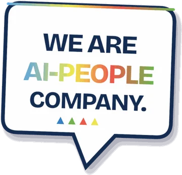
Dia e painel suave.ap-day · .ap-panel · .ap-tone--blue, --green, --red, --yellow, --violetO tom completo troca o tom, o tom suave e o texto sobre o tom de uma vez.
A-Players
AP
A-Player
Portal do A-Player
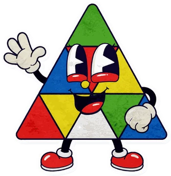
Selo da pessoa
APAPAPAP
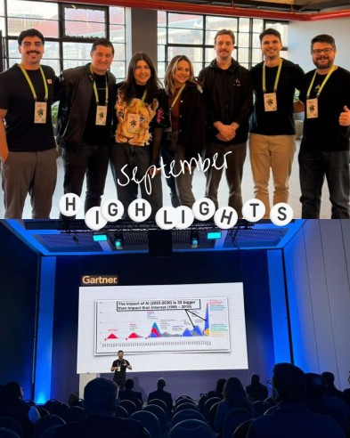
Destaques de setembro
Crachá, selo e foto.ap-lanyard · .ap-idcard · .ap-avatar (--sm, --lg, --xl) · .ap-snap
Material, busca, aplicações e trilha.ap-material · .ap-search · .ap-kbd · .ap-apps · .ap-app (--bare, --add) · .ap-save · .ap-related · .ap-progress · .ap-ministepsÍcone da Atlassian sem outro azulejo: .ap-app--bare.
Sair do Portal?
Para voltar, use o botão Portal do A-Player no rodapé do site.
Aplicação removida.
Diálogo e confirmação.ap-dialog · .ap-close · .ap-btn-quiet · .ap-toast__action
Faça
Lado B nas peças internas: Portal, materiais do time, campanhas para quem é da casa.
Um tom completo por bloco (.ap-tone--*) e gente de verdade nas fotos.
Evite
Tons suaves no lado A: no site, a noite e as cores da marca.
Sticker em cima de rosto ou de texto.
Padrões
Composições que já funcionam.
Como os componentes se juntam numa página A-Players: aberturas, folhas, plataformas, mapas e fechamentos. Reaproveite a composição inteira, com proporções e estados.
Padrões
Abertura
Pill, título, apoio, ações e, quando houver, a base com as especialidades. Tudo entra num só momento, sobre a noite e o gráfico.
A-Players Intelligence
Faça a IA trabalhar onde o trabalho acontece.
O diferencial começa antes da IA.
Organizamos conhecimento, processos e aplicações para que a IA encontre a informação certa, responda com contexto e execute tarefas dentro do processo.
Abertura de páginaExemplo com o texto da página Intelligence.
PillOnde a pessoa está, em poucas palavras.
TítuloH1 de até três linhas de sentido, com largura máxima de 13,5ch.
ApoioUma ou duas frases em 18px, até 600px de largura.
AçõesUm botão principal e, se preciso, um fantasma.
BaseAs especialidades ligadas por uma linha que cresce no hover (opcional), com as frases numa linha só.
Padrões
Folha sobre a noite
Depois da abertura, o conteúdo corre numa folha clara que sobe sobre a noite. Entre duas folhas, a noite volta para um momento de destaque.
Do desafio ao resultado.
Entendemos o contexto do negócio para conectar a capacidade do time, os processos e as plataformas. A parceria vai da decisão à execução e segue até o resultado aparecer na operação.
Folha.ap-sheetRecuo de 6 a 16px da tela, canto de folha, sombra longa.
Padrões
Três plataformas de IA
Atlassian, CISP1 e monday.com lado a lado, nessa ordem. Cada bloco começa e termina na mesma linha nos três cartões, e os textos irmãos quebram no mesmo número de linhas.
Contexto corporativo
A empresa num só fluxo, com o mesmo contexto para equipes e IA.
Mesma anatomia e o mesmo número de linhas por bloco nos três, conferido de 1280 a 1920px; quando um quebra diferente, ajuste o texto, não o layout.
"Plataformas de IA" para o conjunto; a CISP1 é a plataforma própria da A-Players.
Evite
"Frentes" para o conjunto: o termo saiu do site em 05/10/2026.
"Nossas plataformas": Atlassian e monday.com são parceiras.
Logos com alturas iguais em pixels (o peso óptico fica diferente).
Padrões
Mapa de escolha
A pessoa escolhe o desafio e o mapa acende o caminho que a A-Players conecta. O resto esmaece para 38%.
A-Players
Talent as a ServiceProfessional ServicesA-Players Intelligence
Como atuamos
Recrutamento e SeleçãoExtensão de EquipeConsultoria especializadaSustentação e evoluçãoCapacitações e workshopsAdoção de Inteligência Artificial
Caminho
Mapa de escolhaAbas com setas do teclado; nós com .is-on e .is-dim.
Padrões
Fechamento
Toda página termina na noite, com um convite claro e a assinatura da marca. A barra espectral fecha a composição.
We Are AI-People Company.
Fortalecer o time, evoluir suas plataformas ou colocar a IA em prática? Conte o momento da sua operação. A resposta começa pelo contexto, não por uma solução pronta.
FechamentoAssinatura em Manrope 750, 48 a 104px, -0,05em. No rodapé, o norte: "Estratégia que gera resultado. Resultado que sustenta o crescimento."
Padrões
Abertura e cortina
Na primeira visita, quatro palavras entram no compasso dos quatro quartos do espectro. Entre páginas, a cortina de quatro colunas fecha e abre com o nome do destino.
AberturaUma vez por sessão, até 2,3s, com botão para pular
CorFormaMovimentoVoz
intro
CortinaFecha em .44s, abre em .52s, colunas defasadas em 50ms
Padrões
curtain
Faça
Palavras da abertura que resumem a peça (no site: Talentos, Plataformas, Processos, Inteligência).
Clique, Esc ou o botão encerram a abertura na hora.
Evite
Abertura em toda visita ou que bloqueia a leitura.
Cortina com menos de quatro colunas ou fora da ordem das cores.
Voz e escrita
Como a A-Players fala.
Consultiva, direta e humana. Agressiva na clareza, prudente na promessa: frases curtas em pt-BR, nomes oficiais preservados e nada que não possa ser comprovado.
Voz
Princípios
Quem lê a A-Players deve sentir que fala com alguém que entende o negócio dela, sem pressa e sem exagero.
Consultiva antes de comercialComece pelo desafio de quem lê, não pela lista do que vendemos.
Resultado no centroCada trecho diz o resultado concreto: "Menos pedidos repetidos chegando ao especialista", "Menos tempo procurando informação". Resultado é o fim; não vire muleta.
Impacto na abertura, detalhe por dentroHome e aberturas dizem o que muda para o cliente. Plano de assinatura, escopo e condições ficam no corpo das páginas internas, como Professional Services, Atlassian e monday.com.
A IA diz o que fazEncontra, responde, resume, executa tarefas, automatiza etapas, apoia decisões. IA como meio, não como fim.
Pessoas primeiro, IA como apoioEm Talent as a Service, o tradicional vem antes: Recrutamento e Seleção e Extensão de Equipe. Os agentes AI-Players apoiam a equipe; a gestão e o conhecimento continuam humanos.
Agressiva na clareza, prudente na promessa"Faça a IA trabalhar onde o trabalho acontece." Sem "nunca mais", "100%" ou "qualquer integração".
Curta e diretaUma ideia por frase. Se precisa de travessão, são duas frases.
Gente, não superioridade"Tecnologia feita de gente movida por desafios." Descreva atitude e compromisso, nunca "acima da média".
Fato com fonteNúmero, preço, case e capacidade de produto só com fonte verificada. Separe fato, conteúdo interno, hipótese e rascunho.
Sem enchimentoNenhuma frase institucional só para ocupar espaço.
Voz
Pontuação
Nenhum travessão, meia-risca ou hífen com espaços como pontuação. Hífen de palavra composta e de nome continua: A-Players, AI-People, pós-venda, pt-BR.
Em vez de
Escreva
Um travessão no meio, abrindo uma explicação
Vírgula, dois-pontos ou parênteses: "O diferencial começa antes da IA: organizamos o contexto."
Duas ideias coladas por um traço
Duas frases: "Pessoas e agentes. Uma operação que realmente anda."
Hífen com espaços numa lista ou título
Dois-pontos ou quebra de linha.
O verificador tools/check-peca.py confere isso em toda peça. Intervalo numérico e o traço isolado de "não disponível" em tabela são aceitos.
Voz
Vocabulário
As palavras que a marca usa e as que ela evita, com o porquê. Decisões de setembro e outubro de 2026.
Use
Evite
Por quê
plataformas, aplicações
ferramentas
Plataformas é o que a A-Players implementa e faz funcionar; aplicações são os produtos dentro delas (Jira, monday CRM).
plataformas de IA, três plataformas
frentes, nossas plataformas
Atlassian, CISP1 e monday.com juntas: "Conhecer as plataformas de IA". Sem "nossas": Atlassian e monday.com são parceiras.
implementar, evoluir, fazer funcionar
potencializar
Diga o que acontece. "Potencializar" saiu do site em português.
resultado, caminho, formato, acompanhamento
jornada, ecossistema, transformar e eficiência como vício
Ficam onde são nome ou conceito: "as duas jornadas" de Talent as a Service, o filtro "Ecossistema" do blog e títulos publicados.
contexto, dados para decidir
sinais
O que a IA usa e o que ela entrega, em palavra de quem decide.
maturidade da empresa
porte
"Olhamos a maturidade da empresa, as equipes envolvidas e o momento dos processos."
Planos de assinatura, Capacitações e workshops
AMS, Academy, Workpacks
A A-Players não usa mais esses termos, em português nem em inglês.
Portal do A-Player
A-Hub
O portal interno. Em rótulo curto: Meu Portal, Buscar no Portal, Entrar no Portal.
gráfico
grafo
"Um só gráfico". Nomes de produto e método ficam em inglês: Teamwork Graph, Context Graph.
gente movida por desafios
gente acima da média
Atitude e compromisso, não superioridade.
Business Partner
HRBP, HR Business Partner
O papel que acompanha os profissionais alocados, em português e em inglês.
acompanhados por especialistas
supervisão, supervisionados
Os AI-Players apoiam a equipe; especialistas da A-Players acompanham e validam cada entrega.
visibilidade (FinOps)
inventário
A primeira etapa do FinOps de SaaS e IA mostra tudo o que se contrata, por fornecedor e por área. "Inventário" é genérico.
a CISP1
o CISP1
No feminino, como no site da própria CISP1.
monday.com
com M maiúsculo ou sem o .com
Sempre minúsculo, como o fabricante escreve.
Camadas do Context Graph
outras listas de camadas
Negócio, Processos, Plataformas, Agentes e Feedback.
a lógica do Context Graph
"Aceleração = Contexto × Inteligência" como nossa
A fórmula é da Atlassian; a A-Players não a apresenta como própria.
Voz
Nomes e ofertas
Especialidade não é oferta, pilar não é produto, parceiro não é produto da A-Players. Cada nome no seu nível.
Nível
Nomes
Especialidades
Talent as a Service · Professional Services
Talent as a Service
Recrutamento e Seleção · Extensão de Equipe · AI-Players (em inglês: Tech Recruiting · Managed Resources · AI-Players)
Pilares de Professional Services
Consultoria especializada · Planos de assinatura (rótulo: Sustentação e evolução) · Capacitações e workshops · Adoção de Inteligência Artificial · FinOps de SaaS e IA (em inglês: Consulting Services · Subscription plans · Training & Workshops · AI Adoption · SaaS and AI FinOps)
Plataformas de IA
A-Players Intelligence reúne Atlassian, CISP1 e monday.com
Planos de assinatura
Essential · Growth · Enterprise (gestão de ambientes, suporte, melhorias contínuas e evolução estratégica da plataforma; cada plano soma ao anterior, sem pacotes de horas)
Oferta de custo
FinOps de SaaS e IA (avulso ou no plano Enterprise)
Parceiras estratégicas
Atlassian · CISP1 · monday.com
Assinatura
We Are AI-People Company.
Norte
Estratégia que gera resultado. Resultado que sustenta o crescimento. (só no rodapé)
Portal interno
Portal do A-Player
Pill, título e rodapé de uma mesma peça falam no mesmo nível. Distinga sempre produto A-Players, oferta de adoção, parceiro, cliente e campanha.
Voz
Texto de interface
O botão diz o que acontece, a confirmação repete o nome da ação e o erro explica como resolver.
Situação
Exemplo do site
Regra
Botão principal
Vamos conversar
Convite em primeira pessoa do plural.
Abertura da Home
Nossos serviços · Quem somos
O destino, quando o convite já está no cabeçalho.
Fechamento
Falar sobre o meu cenário
A pessoa fala do contexto dela, não compra um pacote.
Link para as plataformas
Conhecer as plataformas de IA
Sem "frentes" e sem "nossas".
Chamada de cartão
Explorar Atlassian · Conhecer CISP1
Verbo e destino.
Atalho
Pular a jornada
Diz o que será pulado.
Formulário
Enviar mensagem
A confirmação usa o mesmo verbo: "Mensagem enviada."
Cookies
Aceitar todos · Só os necessários
Aceitar e recusar com o mesmo peso.
Biblioteca
As três plataformas de IA,nos arquivos oficiais.
52 marcas, Collections, aplicações e IAs da Atlassian, da CISP1 e da monday.com, com 194 arquivos tirados das páginas oficiais dos fabricantes, sem edição. Busque, escolha o fundo e baixe o arquivo certo.
Biblioteca
Todas as marcas
Atlassian (36), CISP1 (1) e monday.com (15), nessa ordem. Cada cartão traz o logo no fundo escolhido; em Todos os arquivos estão as outras versões, a fonte e o texto alternativo.
Três cores oficiais: brand (azul), neutral e inverse (branco).
O ícone de cada aplicação fica dentro de um azulejo; a cor do azulejo é a da Collection.
Logo de aplicação quando o contexto Atlassian é claro; logo attribution (com a assinatura Atlassian) quando não é, como em anúncios, vídeos e white papers.
Nunca montar um attribution próprio nem desmontar os arquivos oficiais.
Logos com strapline: nome centralizado e nunca menores que 280px de largura.
Não alterar o raio do azulejo nem colocar o ícone dentro de outro contêiner.
Sem sombra, contorno, fundo complexo ou combinação de cor não aprovada.
Respiro livre em volta; no logo da empresa, a letra A do nome define o respiro mínimo.
Em lista, alinhar pela altura do ícone; com texto, alinhar ao centro do ícone.
Texto alternativo com o nome da aplicação e Atlassian.
A cor do azulejo é a Collection
Cada ícone traz o desenho da função num azulejo; a cor do azulejo diz a Collection. As aplicações de cada uma, como o site apresenta:
Negócio, projetos e conhecimento
Atendimento, TI e operações
Engenharia
Produto
Liderança e portfólio
Faça
Logo de aplicação em peças sobre Atlassian; attribution em anúncio, vídeo e white paper.
Versão para fundo escuro na noite; azul ou neutra no claro.
Texto alternativo com a aplicação e Atlassian: "Jira, Atlassian".
Evite
Pôr o ícone dentro de outro azulejo, círculo ou cartão.
Montar a sua própria assinatura com a palavra Atlassian.
Logo com strapline abaixo de 280px de largura.
Biblioteca
CISP1
Parceira estratégica da A-Players: software e IA sob medida. Nos textos, a CISP1, no feminino, como no site da própria CISP1.
Parceira estratégica da A-Players: a A-Players conduz a venda, o marketing e a gestão do cliente; a CISP1 desenvolve a solução. No texto, a CISP1, no feminino.
Use o PNG oficial no claro; a versão para o escuro é derivada e serve às peças da A-Players.
Biblioteca
Regras da monday.com
Resumo do press kit oficial, lido em 04/10/2026: monday.com/p/news/press-kit. Os nomes seguem o menu do site da monday.com.
Usar o logo completo, com o .com.
Usar só a versão colorida; não usar versões monocromáticas.
O logo precisa se destacar do fundo; nunca deixá-lo sumir.
Sobre as cores da marca, o logo vai numa cápsula escura (pacote 2026); a cápsula nunca aparece sozinha.
Exemplos oficiais do pacote 2026
Sobre o amarelo da marcaSobre o verde da marcaSobre o vermelho da marcaSobre o pretoSobre o roxoSobre o branco
Sobre as cores, o logo vai inteiro dentro da cápsula escura. A cápsula é parte do arquivo, não um fundo para outros elementos.
Biblioteca
Nomes oficiais
Escreva como o fabricante escreve: monday.com e os produtos da monday.com em minúsculas, Jira Service Management por extenso, Rovo sem sufixo. A coluna da direita mostra a forma curta que o site usa.
Nome oficial
Plataforma
Grupo
No site e em espaço curto
Atlassian
Atlassian
Marca do fabricante
Jira
Atlassian
Teamwork Collection
Confluence
Atlassian
Teamwork Collection
Loom
Atlassian
Teamwork Collection
Rovo
Atlassian
IA
Jira Service Management
Atlassian
Service Collection
Customer Service Management
Atlassian
Service Collection
CSM em espaço curto, com o nome completo no title
Assets
Atlassian
Service Collection
Bitbucket
Atlassian
Software Collection
DX
Atlassian
Software Collection
Pipelines
Atlassian
Software Collection
Bitbucket Pipelines por extenso; Pipelines no cartão da Software Collection
Rovo Dev
Atlassian
IA
Jira Product Discovery
Atlassian
Product Collection
Feedback
Atlassian
Product Collection
Focus
Atlassian
Strategy Collection
Talent
Atlassian
Strategy Collection
Analytics
Atlassian
Outras aplicações
Chat
Atlassian
Outras aplicações
Compass
Atlassian
Outras aplicações
Goals
Atlassian
Outras aplicações
Guard
Atlassian
Outras aplicações
Home
Atlassian
Outras aplicações
Hub
Atlassian
Outras aplicações
Jira Align
Atlassian
Outras aplicações
Projects
Atlassian
Outras aplicações
Search
Atlassian
Outras aplicações
Sourcetree
Atlassian
Outras aplicações
Statuspage
Atlassian
Outras aplicações
Studio
Atlassian
Outras aplicações
Teams
Atlassian
Outras aplicações
Trello
Atlassian
Outras aplicações
CISP1
CISP1
Parceira estratégica
No feminino: a CISP1
monday.com
monday.com
Marca do fabricante
Sempre minúsculo e com o .com
monday work management
monday.com
Produtos
monday CRM
monday.com
Produtos
monday service
monday.com
Produtos
monday dev
monday.com
Produtos
monday campaigns
monday.com
Produtos
monday AI
monday.com
IA
monday sidekick
monday.com
IA
Em espaço curto, como no site: Sidekick
monday agents
monday.com
IA
Em espaço curto, como no site: Agents
monday vibe
monday.com
IA
Em espaço curto, como no site: Vibe
Agent Factory
monday.com
IA
Magic
monday.com
IA
WorkCanvas
monday.com
Mais da monday.com
WorkForms
monday.com
Mais da monday.com
monday marketplace
monday.com
Mais da monday.com
Biblioteca
Fora da biblioteca
Logos que ainda aparecem nas páginas oficiais, mas não entram nas peças da A-Players, e o porquê.
OpsgenieFim de venda em 04/06/2025 e fim de suporte em 05/04/2027; os recursos foram para o Jira Service Management e o Compass. Fonte
AtlasSucedido por Goals e Projects, que estão na biblioteca. Fonte
Bamboo, Clover, Crowd, Crucible e FisheyeAplicações de Data Center que não fazem parte das ofertas apresentadas no site. Fonte
Recursos
Leve a marca para a sua peça.
Uma folha de estilo, tokens em CSS e JSON, logos, geometrias, ícones e um guia para a IA. Tudo nesta pasta, com caminhos relativos.
Recursos
Como usar
Carregue as fontes e a folha da marca. Use as classes ap-*; a folha da sua peça cuida só da composição.
Todos os tokens, lidos agora de tokens/tokens.json. A fonte única é tools/build_tokens.py, que gera o JSON, o CSS e o bloco de tokens de aplayers.css.
Token
Grupo
Claro
Escuro
Uso
Carregando os tokens.
Recursos
Com IA
O arquivo llms.txt resume o sistema para agentes: tokens, classes, padrões e as regras de escrita. Entregue o arquivo junto do pedido.
Pedido de exemplo
Crie uma página de evento da A-Players seguindo o A-Players Design System.
Leia design-system/llms.txt antes de começar.
Use css/aplayers.css e as classes ap-*; não escreva componentes novos.
Abertura com pill, H1, apoio e um botão; programação numa folha com .ap-stepline.
Texto em pt-BR, sem travessão, sem números que eu não tenha passado.
Claro no que resolve, prudente no que promete; nada de "frentes", AMS, Academy ou Workpacks.
Recursos
Antes de publicar
O que conferir em toda peça antes de dizer que está pronta.
Verificador da marcaRode python tools/check-peca.py <pasta> na raiz do workspace: travessão, tipografia, pill, geometria e referências.
Telas390 × 844, 1366 × 768 e 1920 × 1080; em landing pages, também 125%, 150% e 200% de zoom.
Temas e movimentoClaro, escuro e ?movimento=reduzido.
AlinhamentoCartões lado a lado com cada bloco na mesma linha e textos irmãos com o mesmo número de linhas (1280, 1366, 1440, 1536 e 1920px); logos com o mesmo peso óptico. Quando algo quebra diferente, ajuste o texto, não o layout.
ConteúdoNomes oficiais, vocabulário da marca, nenhum número sem fonte e nenhum termo aposentado (frentes, AMS, Academy, Workpacks, A-Hub). O inglês com os mesmos critérios.
Recursos
Versões
O sistema acompanha o site. Cada mudança no site que vira regra entra aqui com data.
Versão
Data
O que entrou
2.5
06/10/2026
Terceira rodada de 2027, validada no notebook: H1 e H2 um degrau abaixo entre 1001 e 1799px, para os títulos de duas frases ficarem em duas linhas; "acompanhados por especialistas" no lugar de "supervisão"; "visibilidade" no lugar de "inventário" no FinOps.
2.4
06/10/2026
Segunda rodada de 2027 no site: home e aberturas falam de impacto e o plano de assinatura fica nas páginas internas; em Talent as a Service, o tradicional vem primeiro e os AI-Players entram como apoio, com a gestão e o conhecimento sempre humanos; o plano de assinatura reúne gestão de ambientes, suporte, melhorias contínuas e evolução estratégica da plataforma.
2.3
06/10/2026
Vocabulário de 2027: AI-Players (os agentes de IA da A-Players, terceira forma de Talent as a Service), planos de assinatura Essential, Growth e Enterprise, FinOps de SaaS e IA e a CISP1 como parceira estratégica. Títulos de oferta com a dor, o que muda, a condição real e o primeiro passo.
2.2
06/10/2026
Tudo o que é vivo no site ganhou a rota Vivo: retícula, nós, ligações e pulsos, respiração e câmera, cursor como agente, as 13 formações, troca e explosão, geometria em profundidade e o inventário do que se mexe. O motor do gráfico do site virou js/ap-vivo.js, portátil e com os mesmos números, com exportação em PNG. Novos: ap-vivo, ap-vivo--page, ap-hub, ap-sat, ap-dust, ap-run e ap-geo[data-depth]. O motor ganhou as cores do dia (data-vivo-theme) e a página inteira (ap-vivo--page), que viraram o fundo vivo do Portal do A-Player, e os stickers ganharam o balanço ap-sway. A placa pequena (ap-plate--sm) acompanha o tamanho do elemento, como no site, e o exemplo da Home passou a usá-la.
2.1
05/10/2026
Acompanha a revisão de posicionamento do site. "Frentes" vira "plataformas de IA" em todo o sistema (as classes ap-front e os tokens --ap-front-* mantêm o nome). Novos: botão claro (ap-btn--light), logos das cinco Collections com par claro e escuro (ap-coll-logo, ap-on-light, ap-on-dark), IA em destaque (ap-aiapps) e as caixas vivas das três camadas (ap-layer3__art, ap-layer3__apps). A Biblioteca e o lado B passam a aparecer na documentação. Voz com as regras do briefing: resultado no centro, a IA dizendo o que faz, clareza agressiva e promessa prudente, termos aposentados. O índice lateral não corta mais a placa do item atual.
2.0
04/10/2026
Lado B na folha: os componentes do Portal do A-Player (tons suaves, selo da pessoa, crachá, foto, evento, termo, material, aplicação, salvar, progresso, busca, diálogo) e a Biblioteca com os logos e ícones oficiais da Atlassian, da CISP1 e da monday.com.
1.1
01/10/2026
Publicado junto com o site e o Portal do A-Player, na mesma pasta: o Portal usa esta folha e estes assets direto. Um tema só nas três peças, com a regra de cookies do site. O gráfico vivo aceita polos próprios por página. A imagem do cartão de leitura mantém a proporção e o índice lateral marca a última seção.
1.0
01/10/2026
Primeira versão, extraída do site A-Players (versão Claude): tokens, 36 componentes, padrões de página, voz e recursos para IA.
 Product
Product Strategy
Strategy